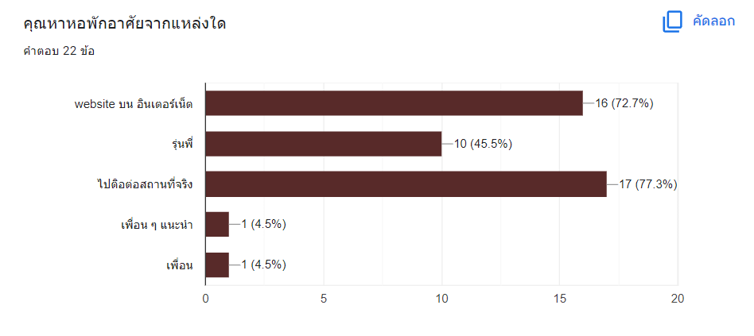
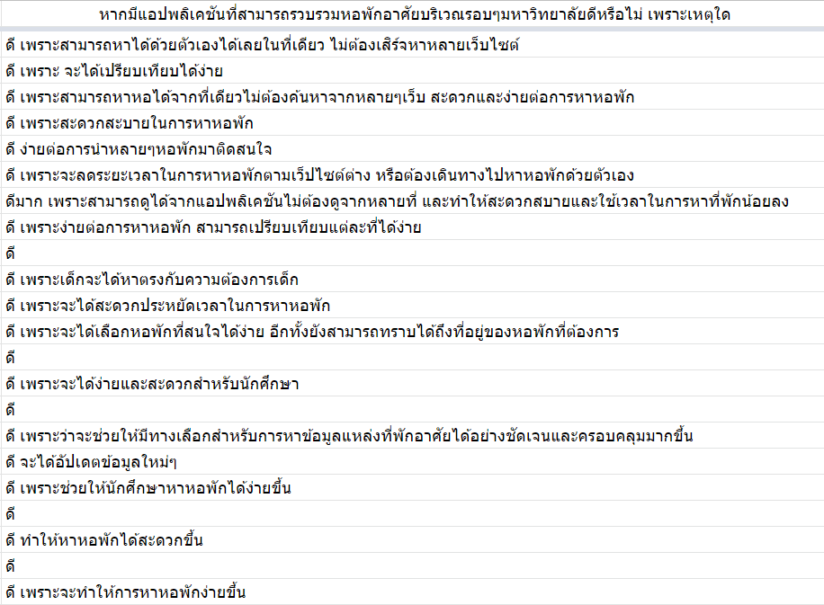

Introduction
Every year, there are first-year students who have to find a dormitory to study at the university. Therefore, I came up with an idea and conducted a survey using a questionnaire to find accommodation in the university area. 22 students were interested in off-campus dormitories (77.3%), condos (36.4%), rented houses (22.7%), and university dormitories (18.2%), respectively.
And get information about dormitories around the university by contacting the actual location up to 77.3%, the website 72.7%, seniors 45.5%, and friends 9%, respectively.

And the difficulty of finding a student dormitory in Chang 1-5 points as follows: 1 point is 22.7% 2 points, representing 13.6% 3 points, representing 13.6% 4 points equaling 40.9% and 5 points equaling 9.1%Â
and interested in and have opinions about applications that can collect dormitories in the university area as follows:

It is also designed as a mobile app that collects student dormitories,
both inside and outside dormitories, rented houses, condos, and can search for roommates all in one place. Therefore, it is the source of the NEWMOD app.
by the word "NEWMOD"
NEW: First-year students who are coming to study at King Mongkut's University of Technology Thonburi
MOD: the name of the district where the university is located. which most people here refer to as "Dek Bangmod."
The selected color scheme is orange. The main color of King Mongkut's University of Technology Thonburi.
Problem
1. First-year students do not know the dormitories in the university area.
2. Having to travel far and taking a long time to find a dormitory
3. Must look for dormitories from a variety of sources. chaotic and complicated
4. The information on the website is not updated. Solution Design a simple student housing app. By focusing on finding a dormitory and making an appointment to book a queue to see the actual place on the specified date and time, At the same time, it increases comfort. Save time and get accurate dormitory information to users.